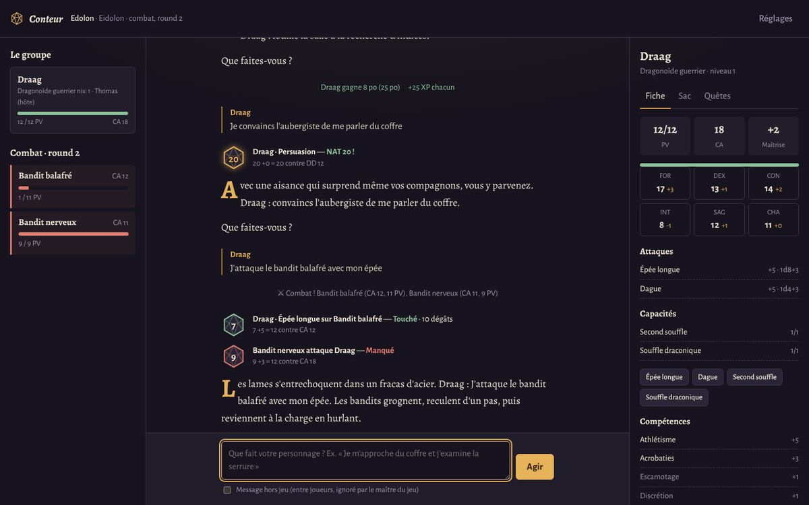
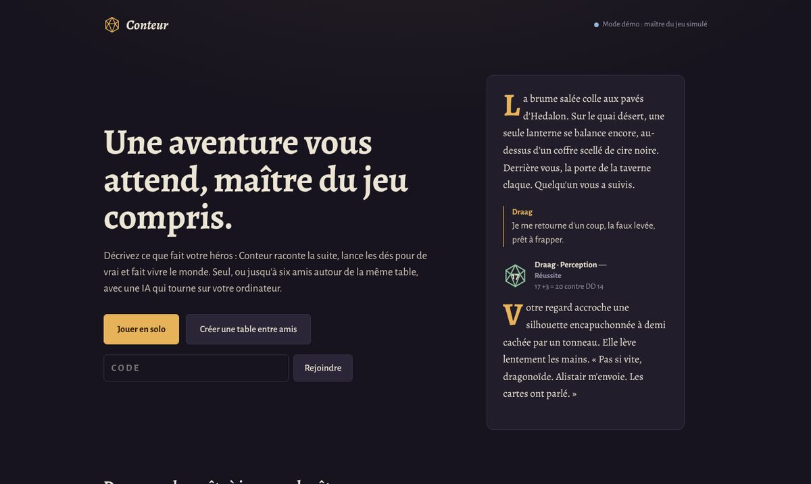
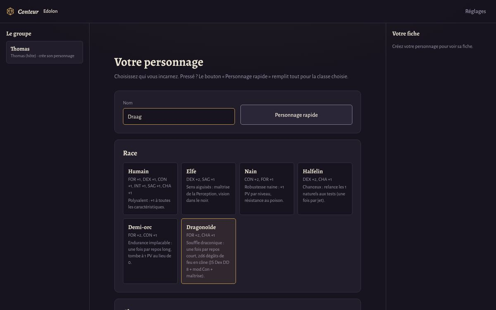
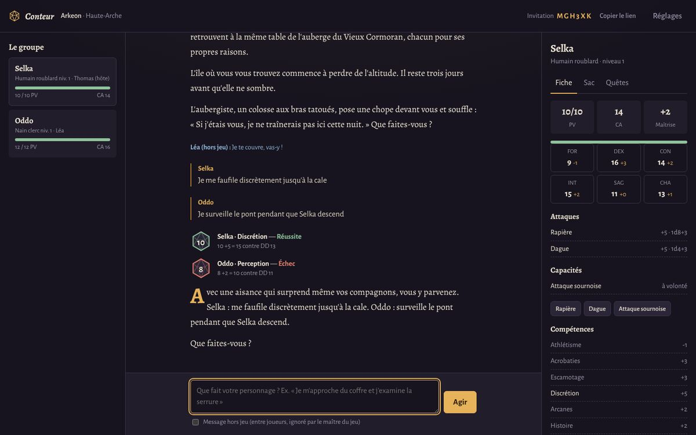

IA_001
🎲 Application web — Node.js + Ollama
● Terminé · open source
Conteur — maître du jeu IA
Un maître du jeu pour jeux de rôle, en solo ou jusqu'à six amis : chacun décrit ce que fait son personnage, l'IA raconte la suite en direct et fait vivre le monde. Elle tourne en local avec Ollama : gratuit, privé, hors ligne.
- Multijoueur en temps réel : table avec code d'invitation, tours de parole, messages hors jeu
- Règles inspirées de D&D 5e : 6 races, 6 classes, compétences, combat, sorts, niveaux
- Les dés sont lancés par le code, jamais par l'IA ; tout ce qu'elle propose est validé et plafonné
- Mondes Edolon et Arkeon, ou création de monde assistée par l'IA
- Sans dépendance npm, CSP stricte, 21 tests dont des parties multijoueur réelles
- Arbitre — l'IA décide des jets nécessaires (JSON contraint par schéma)
- Dés — le moteur de règles lance et applique bonus, avantage, critiques
- Narrateur — l'IA raconte en respectant les résultats, diffusé mot à mot
- Greffier — or, objets, XP proposés par l'IA, validés par le moteur
LLM local
Ollama · Qwen3
Node.js
Server-Sent Events
Sorties structurées
JavaScript



